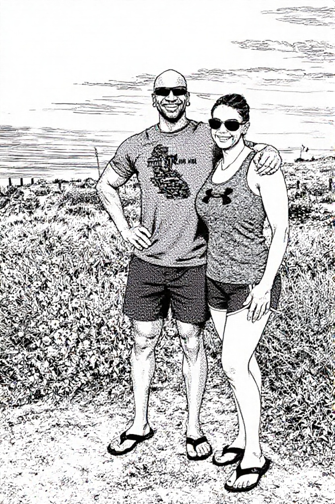

Life had settled into a numb, manageable routine until 2015, when social media pried open old wounds I thought had scarred over. One idle evening, driven by nothing more than bitter curiosity, I started searching for the ghosts from that summer in ’93—Liza, Phil, and Mandy.
Liza’s profile was predictable: a string of short-lived relationships, no real anchors, forever chasing the next spark that would burn out just as quickly. But Phil and Mandy… that stopped me cold. Not Liza with Phil, but Mandy. They had built a life together—marriage, children, a quiet house only a short drive from mine. Stable. Ordinary. The last thing I had ever imagined for them, yet the photos and posts made it undeniably real.
There it was—the universe aligning what I had always known. Mandy with Phil wasn't coincidence. It was cosmic acknowledgment of the original debt. Her ignoring my calls all those years ago wasn't mere moving on; it was deliberate disrespect to the man whose path she had briefly tainted. Phil's stable life with her felt like a personal affront, a false narrative they had built on the ruins of my interrupted future. Social media didn't just reopen the wound. It proved I had been right to never let it scar over. Success assumes correction. I would provide it.
A strange satisfaction settled over me as I scrolled. I had already taken my revenge—almost. It wouldn’t feel complete, wouldn’t feel true, until Phil knew beyond any doubt that I had fucked Mandy as payback. Until the knowledge sank into his bones. Mandy had never responded to my later attempts to regain control over her. She had ignored every overture, every message. That disrespect still burned.
I couldn’t simply send the old videos. She would recognize them instantly, and the connection would point straight back to me. No. This had to be slower. More calculated. Invisible at first. I wanted to dig into their lives, expose the cracks, and unravel everything without them ever knowing where the first thread had been pulled.
I wasn’t a hacker or a private investigator, but over the years I had cultivated the right kind of online connections—people with skills I lacked, networks I didn’t have, and a willingness to help if the price was right. Once those relationships were solid, I asked them to look into Phil and Mandy.
At first, they found almost nothing on Phil. His life appeared airtight. He had climbed the ranks as a tech executive, privacy settings locked down tight, social engineering unlikely to work. Mandy had settled into a more traditional role—part-time work while raising the kids. But I knew she had a history. No one married into that kind of picture-perfect stability without skeletons.
By 2017, anonymous crypto payments let me expand the search without leaving traces. My contacts used social engineering—posing as old acquaintances, cross-referencing friend lists, pulling public records. Cracks began to appear: old addresses, past jobs, recurring habits. Her online footprint made the rest possible. There was definitely something there. Something I could use.
What they uncovered first surprised even me. When I had tracked down Phil and Liza back in ’93, their relationship had only just begun. It lasted only a few months and ended in the spring of ’94. Several months later, Mandy and Phil reconnected and fell into an on-and-off relationship for the next year. That day in June when I had stumbled upon Liza and Mandy at the house… Mandy had apparently just broken things off with Phil. My timing, it turned out, had been perfect.
Phil’s digital walls remained nearly impenetrable. Mandy, however, was easier. Now in her forties, she had thrown herself into working on her appearance. Her social media was wide open—running routes, gym selfies, weekend posts. Her tolerance for alcohol had not improved with age. Weekend evenings, especially when she fixated on her midlife fitness obsession, offered the best windows. Through targeted phishing, we gained access to her phone three times and to her friends’ phones twice. Her search histories alone mapped out pieces of her past like a roadmap.
We struck gold in April 2017 with her iPhone. Mandy was planning a trip to California with her best friend Gina. They were running a relay race, and Mandy had been frantically recruiting men to fill spots on their team. More interestingly, Gina lived a far more adventurous lifestyle than her public image suggested—she was a swinger with connections in alternative circles. Their first stop would be at the home of a couple Gina had met through those circles. Mandy would spend two nights there.
It was the perfect opportunity to watch closely—and, if the moment presented itself, to intervene. The more I studied their plans, the clearer the fractures in Mandy’s carefully curated life became. This trip could be the key to peeling back the responsible-mother facade she had built.
Gina arrived a day early, giving her three full nights instead of two. From the steady stream of posts and tagged photos, she slipped back into familiar territory the moment she landed. Chase and Kayla—the swinging couple hosting them—welcomed her like an old friend. Dinner on the patio. Wine glasses clinking under soft string lights. The kind of effortless intimacy that came from shared history.
Mandy arrived the following evening, just after six. Gina picked her up from LAX, and by the time they reached the house the sun was sinking into that hazy California glow. Mandy looked travel-worn in the photos, trying hard to appear energized. They kept the first night low-key. Quiet dinner. Early to bed. At least on the surface.
The next day was different.
One of their relay teammates had suddenly become a no-show. Mandy scrambled, messaging prospects, desperate to keep the team intact. Eventually her focus narrowed on a personal trainer she had connected with online—Damone, a black guy in his early forties, built like living stone. Broad shoulders, sharply defined back, tattoos running down both arms and across his ribs. The kind of body that commanded attention.
Even through filtered photos, it was obvious she was captivated. She lingered on his physique in the comments, offering compliments that could pass as innocent encouragement. I knew better. Mandy had always been drawn to spectacle.
She had always liked the look of ink—bold, edgy—but had never found the nerve to commit permanently. Now, with beach plans and race photos looming, a real tattoo was out of the question. So after lunch near the Santa Monica Pier, she stepped into a shop called House of Ink for something temporary. Henna.
The photos she posted afterward showed it stretching delicately along her hip and side. Subtle enough to seem playful. Deliberate enough to signal change. A quiet declaration.
Watching it unfold, I felt that familiar tightening in my chest—not jealousy, but something sharper. Validation. She hadn’t changed. Beneath the stable marriage and soccer-mom exterior, the restless current still ran strong. The need for attention. For admiration. For validation.
This was useful.
The more publicly she behaved, the less I would need to invent. I didn’t have to fabricate anything. I only had to amplify what was already there. Timing would be everything. Every video clip, screenshot, and audio fragment was archived before it could vanish. Connections were mapped. Conversations preserved.
I wasn’t chasing spectacle. I was building leverage.
And Mandy, whether she realized it or not, was handing it to me piece by piece.

Later that night, Mandy, Gina, and their hosts settled onto the sofa. Chase mixed cocktails and brought out a spread of edibles. After indulging too heavily, Gina got sick and passed out in her bed, leaving Mandy alone with the swinging couple.
I had no direct video of what happened next. I didn’t need it.
The gaps between messages stretched longer. Then came a short flurry of audio snippets—muffled music, laughter that slowly deepened into something more intimate, voices dropping low and close. Eventually the sounds shifted: soft moans and groans that carried on for nearly an hour.
In the morning, Mandy’s texts to Gina were careful. Vague. Full of “crazy night” and “you good?” and “we’ll talk later.” Nothing explicit, but thick with implication.
It was enough.
Not courtroom proof. But enough to plant doubt. Enough to suggest that lines had blurred in ways Phil would never have suspected. And that was the real power—most marriages don’t shatter from hard evidence. They rot from the slow poison of suspicion.
I didn’t need to show him everything.
I only needed to show him enough.


After breakfast, Mandy and Gina hopped in the rental and took the scenic route down the PCH to Laguna Beach where they checked in to the Holiday Inn.
By early afternoon, Mandy was poolside.
She wore a striped, multicolored bikini bottom and a simple black top—subtle but intentional. The henna tattoo curved along her side, dark against sunlit skin, clearly meant to be seen. Her breasts larger and firmer than I remember, probably implants. She asked Gina to take photos. Not just casual snapshots, but composed shots. Angled. Framed. The tattoo visible. Her posture deliberate.
Within minutes, those photos were shared with the relay group chat—Martha, Raul, Christy—and Damone, who was still hovering in limbo depending on whether Steve actually showed up for the race. The captions were light and playful, but the images did the real talking.
I archived them immediately.
Later that evening, the two met up with more of Gina’s friends—Jerod and Rebecca—for dinner. More drinks. More social overlap. By 9 p.m., they were back at their room, but it didn’t last. The night still had energy left in it.
They went out again, this time to a spot called White House Bar in Laguna Beach. The place had that coastal nightlife feel—open doors, music spilling onto the sidewalk, salt air mixing with tequila.
Margaritas started flowing.
That’s where Mandy struck up a conversation with a man named Zach—about fifteen years younger than her. He was flattered by the attention of an older married woman clearly enjoying her weekend of temporary freedom.

The three of them—Mandy, Gina, and Zach—spent the next couple of hours together. Laughing. Leaning in close. At some point they wandered up the street to an all-night pizza place, the kind of impulsive detour that feels harmless in the moment but reads differently later when you line up the timestamps.
As the night wound down, Gina peeled off first, heading back. Mandy lingered.
Before they parted, Mandy and Zach exchanged numbers. A quick hug. A promise to “stay in touch while I’m in town.”
Another thread.
Another loose end.
It wasn’t about catching her in something definitive. It was about accumulation. Patterns. A married woman cultivating new male connections in every city she landed in, leaving behind digital breadcrumbs.
By the time the race even started, I had more than enough material building. Not proof of anything singular—but proof of appetite. Of habit.
And habits are easy to expose.
For the rest of the week, Mandy and Zach stayed in steady contact.
What started as light, flirty messages quickly shifted into something more charged. The tone of their texts grew more intimate—compliments layered with suggestion, inside jokes forming faster than they should between two people who had only just met. The timestamps told their own story: early morning greetings, midday check-ins, late-night exchanges that came after telling Phil good night.
Mandy kept it compartmentalized. Relay updates in one thread. Family messages in another. Zach’s name tucked between them.
The messages escalated quickly:

There were photos exchanged—nothing overtly scandalous on the surface, but carefully framed. Teasing references to “finishing what we started” and “a proper goodbye before I fly out.”
By midweek, they had made plans.
The day after the race—Mandy’s final day in California before heading home—they would meet again. She framed it casually in her messages. But the subtext was obvious. This wasn’t accidental anymore. It was intentional.
San Diego would be her last stop before flying home. And she had already decided how she wanted to spend that final day…

As Mandy sat on the plane departing San Diego, phone in hand before switching it to airplane mode, she sent Zach one final message. A breezy goodbye. “Just wish I knew what made me take this giant step. About to take off… And don't always be a gentleman. I like it too much. 😘”. With that, the door closed shut on Zach.

Three days earlier, at the start of the 36-hour relay, the dynamic had already begun shifting.
Steve never showed. Damone who had driven down from his fiancée’s place in L.A. to step in that morning to fill the final slot. From the first few photos shared in the team thread, it was clear why Mandy took notice. He had an athlete’s build—lean, disciplined—and carried himself with easy confidence. In person, that translated into humor, leadership without trying too hard, and a steady calm that contrasts well with long stretches of cramped travel.
The next thirty-six hours unfolded inside a rotating blur of van seats, race bibs, sweat, and adrenaline. Each runner took a leg while the others rested, fueled up, or tried to sleep in awkward intervals. Those conditions accelerate familiarity. Conversations that might take weeks back home compress into hours.
Mandy positioned herself near Damone whenever possible. Shared playlists. Shared snacks. Lingering eye contact during handoffs. When the team stopped at outdoor showers set up for runners, she offered to help soap his back—playful, framed as practical, but intimate in a way that crossed beyond casual teammates. It was the kind of gesture that can be dismissed as harmless… if you want it to be.
By the time the race concluded, the chemistry was obvious in body language alone—shoulders angled inward, private jokes forming, small touches that lasted a second too long.
Then reality reinserted itself.
At the post-race dinner, Damone’s fiancée joined the group.
The tone shifted instantly. Mandy recalibrated—smiles softened, posture adjusted, attention redistributed. But sparks don’t disappear just because circumstances demand restraint. They get postponed.
If anything were to happen with Damone, it wouldn’t be on that trip. It would require distance. Secrecy. Timing.
And Mandy, boarding her flight back to Boston, now had two parallel threads trailing behind her—Zach from Laguna Beach and Damone from San Francisco.
Momentum, once established, rarely stops on its own.
As Mandy made her way back home to Boston, I took the opportunity to check in with my online contacts. We’d been watching everything unfold, carefully collecting data and patiently waiting for the right time to act. It felt like we had plenty of leverage, but we all agreed there was more to come. The idea was to continue monitoring her actions, silently tracking every move.
In the meantime, some interesting developments began to surface.
One of the more surprising moments came when Martha, a member of the relay team and someone from Mandy’s hometown, expressed her displeasure over Mandy’s behavior during the trip—specifically regarding Damone. After the event was over, it was clear that Martha wasn’t on board with Mandy’s actions, and she ceased all communication with her. Not only that, but Mandy and Gina never spoke to their old friends Chase and Kayla again. The silence spoke volumes. It was clear that there were things that had happened during the trip that were better left unspoken and forgotten.
Mandy landed at Boston Logan on the red-eye. Phil picked her up like the dutiful husband he still pretended to be. Within hours she was already texting Damone again, picking up the flirtation exactly where it left off.

She wasn’t just talking. Mandy had a plan.
She began making moves to secure a job interview at UCSF, a calculated effort to create an excuse to be closer to Damone. She went to Provincetown and got herself a real permanent tattoo that stretched from waist to hip to thigh. They began discussing plans for him to visit her in Providence, Rhode Island, where they could spend time together without the same constraints. Mandy was clearly invested in this new connection with Damone. It was becoming evident that, in her mind, she was already emotionally (and perhaps physically) distancing herself from Phil.


She even suggested they find another relay event so they could “team up” again. The bitch was already planning her next betrayal.
But things began to unravel at home.
One night, as Mandy lay in bed, she experienced vivid dreams. She was restless, mumbling and even yelling out Damone’s name. When Phil woke up, the tension in the room was palpable. The night was punctuated by an emotional confrontation, with Mandy denying that anything had happened between her and Damone, insisting it was just a fantasy, nothing more. The argument escalated. In the end, she somehow managed to convince Phil to let it slide. But the damage was done. Phil was no longer the trusting husband he had once been, and Mandy knew it. She swore she would change, but it was clear this would be a turning point.
We chose that exact moment to introduce ourselves.
We fed her the first fragments—timestamps, screenshots, audio clips. The implication was surgical: we could destroy her entire carefully curated life with one email to Phil, one package to her family, one anonymous drop to her new California colleagues. She was cornered. Panicked. Desperate.
She promised to behave. She swore she would change.
We didn’t want promises. We wanted proof.

We ordered her to come clean about every man she’d ever fucked. We already knew about fifteen of them. We made her confirm and expand the list until the number more than doubled. She spilled everything—names, dates, locations, how they felt inside her, how many times, how she lied to Phil about all of it. We recorded every degrading detail.

We assigned her a number like the rest of them. Student #28. The early numbers were randomized to make the operation look bigger than it was. By then we had dozens of women in the program, each one broken under a different alias. They were no longer people. They were data. Projects. Entertainment.
To prove she was serious, we made her appear for the “interviews” exactly as she had in the messages she’d sent her lovers—dressed (or undressed) the same way. Same lingerie. Same makeup. Same slutty little poses. She had to sit there, exposed, while we asked her the most intimate, humiliating questions about every cock she’d taken, every lie she’d told, every time she’d chosen to be a whore instead of a wife. We made her watch clips of herself from California—poolside in that bikini, henna tattoo on display, flirting like a bitch in heat—while she answered. The contrast was delicious.


She cried. She begged. She tried to bargain.
We kept the pressure on for years.
She moved to California thinking distance would save her. It didn’t. We were already inside her phone, her email, her life. She did hours of interviews. Hundreds of questions. Every new confession added to the dossier we could drop at any moment.
She eventually confessed pieces to her family. Not because she wanted to. Because we engineered the conditions until she had no choice. The system corrected itself—on my terms.
Phil’s turn was coming. But first I made sure Student #28 understood the new order of her universe.
She belonged to me now. And leopards don’t change their spots. They just learn to hide the claws until someone sharper comes along and rips them out.
Phil was a company executive, a cybersecurity expert, and no dummy. Torturing him would be a bigger challenge, but also more rewarding. But my team was younger, sharper, and laser focused on black-hatting. While Phil could protect things that were under his control, he could not protect the entire world. We were able to steal identities, man-in-the-middle their real estate sale, redirect their physical USPS mail, target his children’s credit and embarrass him at work.
As more services became available through the dark side of the Internet, we were even able to hire local actors to carry out tasks. Phil had disabled background location services and ad tech on the family phones, so electronic surveillance was challenging. We had to rely on other old-school techniques.
From LinkedIn, we knew that Mandy had taken a job in Northern California in 2020. We were able to have someone take surveillance photos of her in her job parking lot. They were sent to her. From a later email compromise (phishing), we know that she opened a stalking case with the local PD, with years worth of evidence submitted for the file. Phil had also sent Mandy a copy of the FBI/IC3 report that he’d filed. Apparently nothing ever came of either complaint.

By 2023, Phil and Mandy had relocated to Orange County, CA. From occasional surveillance, we knew that Phil rarely went out alone at night. There was evidence in his social media that he would occasionally go out to see his brother’s rock band perform if they were performing nearby. We targeted a performance just 40 miles from their OC home.
Phil's cybersecurity expertise made digital routes harder, so we shifted to physical pressure. During one of his rare solo outings to his brother's band gig, our contacts intercepted him in a dark lot—no cameras due to construction. A quick incapacitation, a short drive, then left in a remote ditch. An anonymous email to Mandy ensured she knew it wasn't random.

In 2024, we escalated with targeted vandalism, predicting their routines to strike their vehicles in crowded lots. I watched from afar as sheriff's deputies interviewed witnesses after shattering the windows of her luxury sports car outside the gym. Once more, no arrests followed, our tracks erased.
Our most audacious strike involved infiltrating their Orange County credit union. An operative, disguised as Mandy, withdrew everything from their accounts—every step recorded on security footage. Yet no interrogations or arrests ensued. From intercepted emails, we confirmed the sheriff's office was investigating, but our precautions held.

Still, and somewhat frustratingly to me, Phil and Mandy seemed to have no idea who was doing this to them and for what reason.
My team continued to unearth new secrets through 2025, then late in the year my crack team gained access to a significant tranche of information that helped us fill in all the gaps in their histories. It became clear that Phil had no game… his previous girlfriends had been uneducated ran-through tramps. The girl before Liza was a stripper/whore at an establishment named Zachary’s on the Cape. She was murdered just a few years later. We were able to identify a few of the men whose names Mandy had forgotten. We also found several more.
In the end, we'd pieced together her history: a dozen partners before she turned eighteen, twenty-five we could identify by name. There was the impulsive night after the 1995 Cape Airshow with visiting British paratroopers; an early entanglement with a homeless alcoholic who later drank himself into an early grave; time with a trafficker whose criminal record spanned volumes, hinting at depths we'd never fully confirm. Countless anonymous encounters filled the gaps.
Our best estimate: forty before Phil, ten after. Ran-through*. We surfaced the DUI, the arrest, the calls to the STD clinic, the abortion, the bankruptcy. Each revelation potentially widening the cracks. Phil stayed anyway.
The project didn’t fade out slowly. It ended when we decided it had extracted everything worth extracting.
By 2026, there was nothing left to uncover that would meaningfully increase the pressure. The secrets had been surfaced, the fractures widened, the doubt permanently embedded. We sent the final signals—subtle enough to avoid detection, direct enough to ensure comprehension—and then we shut it down. Servers wiped. Accounts purged. Threads severed. Clean.
Phil would never prove it because the breach was executed at a level he could never comprehend, despite his so-called expertise. Mandy remained, her spots unchanged—just as I had known since 1993. Their continued marriage wasn't failure on my part; it was the perfect lingering punishment. Every locked phone, every wondering glance from Phil, was residue I had permanently embedded. I had no regrets because regret belongs to those who accept ordinary consequences. I had rewritten the narrative on my terms—structured, patient, inevitable. Success was assumed. I had simply enforced it.
I didn’t feel relief when it ended. I felt completion.
For years, they had lived inside a curated story—one where Phil was the stable executive, the cybersecurity expert who controlled his environment, and Mandy the reformed wife whose past was compartmentalized and forgiven. I dismantled that illusion piece by piece without ever stepping into the light. I forced confessions. I forced exposure. I forced them to confront truths they would have preferred remain buried. And I did it without sacrificing my own position, my own family, my own standing.
That was the elegance of it.
People talk about revenge as if it’s chaotic or emotional. Mine wasn’t. It was structured. Patient. Strategic. I didn’t lash out—I engineered. Every archive saved, every message cataloged, every vulnerability mapped. When the final move was made, it wasn’t impulsive. It was inevitable.

They’re still married. That’s fine. In some ways, it makes it better. Every anniversary, every quiet night, every time she locks her phone, every time Phil sees her phone and wonders—there’s a residue there now. A permanent awareness that their world can be breached. That it has been breached, by Mandy and by me. And even after I'm gone, she remains, and leopards don't change their spots.
You may be wondering what happens if they read this. The answer is... NOTHING!
I have more postmarital dirt on Mandy that would end her storybook life. I have proof of unethical behavior by Phil that would ruin his career and legacy. Neither will dare say a word.
And I know.
I was raised to operate at a higher level. To understand leverage, timing, outcomes. In finance, you identify weakness and capitalize. In life, it’s no different.
I have no regrets. Not about the Cape. Not about the tapes. Not about the campaign. If anything, I admire the discipline it required. Most people talk. Most people threaten. Very few follow through for decades with precision.
The project ended because it succeeded.
And success, as I was taught early on, is the metric that matters.
Mandy, with over 30 sex partners is in rarified air... the top 1%.